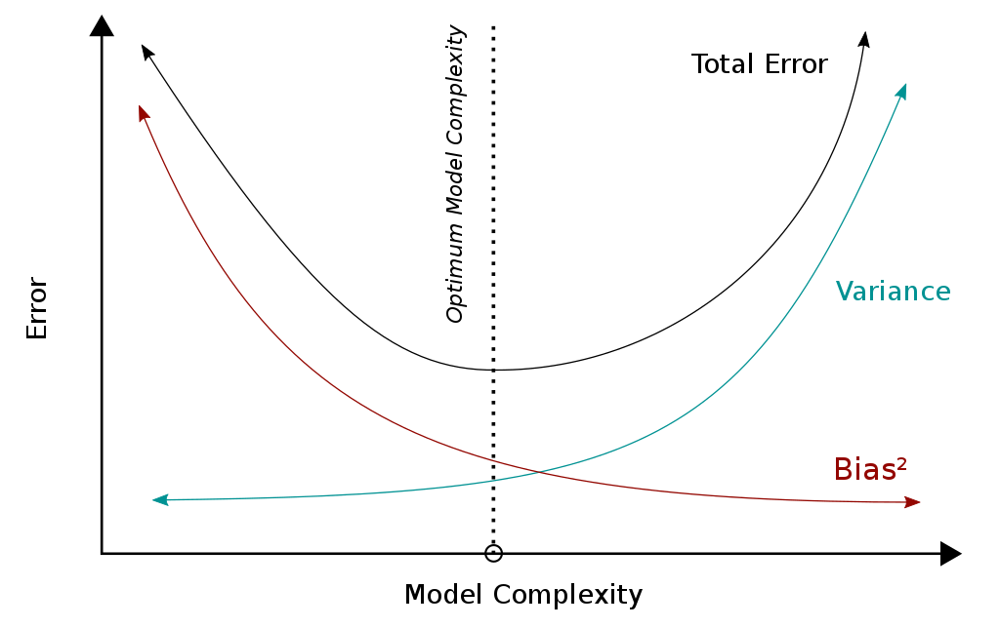

7 General methods and concepts
8 Hyper-parameter tuning
The hyper-parameters (e.g. kernel, gamma, number of nodes in tree) are not trained by algorithm itself. An outer loop of hyper-parameter tuning is needed to find the optimal hyper parameters.
! It is strongly recommended to separate another validation set from the training set for hyper-parameter tuning (you’ll end up with training-, validation- and test-set). See Cross Validation for best practice.
8.1 Grid search
The classic approach is exhaustive grid search: You create a grid of hyper-parameters and iterate over all combinations. The combination with the best score is used in the end. This approach causes big computational costs due to the combinatorial explosion.
from sklearn.model_selection import GridSearchCV # combines grid search with cross-validation
from sklearn.neighbors import KNeighborsClassifier
kn_model = KNeighborsClassifier(n_neighbors=3)
parameters = {"n_neighbors": range(2,10), "p": [1,2], "weights": ["uniform", "distance"]}
clf = GridSearchCV(kn_model, parameters, cv=5)
clf.fit(X_train, y_train)More info: scikit-learn.org
8.2 Randomized search
This approach is used, if there are too many combinations of hyper-parameters for tuning. You allocate a budget of iterations and the combinations of parameters are sampled randomly according to the distributions you provide.
If you want to evaluate on a large set of hyperparameters, you can use a halving strategy: You tune a large combination of parameters on few resources (e.g. samples, trees). The best performing half of candidates is re-evaluated on twice as many resources. This continues until the best-performing candidate is evaluated on the full amount of resources.
from sklearn.ensemble import RandomForestClassifier
from sklearn.experimental import enable_halving_search_cv # since this method is still experimental
from sklearn.model_selection import HalvingRandomSearchCV
from sklearn.utils.fixes import loguniform
rf_clf = RandomForestClassifier()
param_distributions = {"max_depth": [3, None],
"min_samples_split": loguniform(1, 10)}
hypa_search = HalvingRandomSearchCV(rf_clf, param_distributions,
resource='n_estimators',
max_resources=10,
n_jobs=-1, # important since hyper-parameter tuning is very costly
scoring = 'balanced_accuracy',
random_state=0).fit(X, y)More info: scikit-learn.org
9 Model selection
The candidates for hyper-parameters must not be evaluated on the same data that you trained it on (over-fitting risk). Thus, we separate another data-set from the training data: The validation set. This is reduces the amount of training data drastically. Therefore we use the approaches of Cross Validation and Bootstrapping.
9.1 Cross Validation
In k-fold Cross Validation, we split the training set into k sub-sets. We train on the samples in k-1 sub-sets and validate using the data in the remaining sub-set. We iterate until we have validated on each sub-set once. We then average out the k scores we obtain.

from sklearn import svm
from sklearn.model_selection import cross_val_score
SVM_clf = svm.SVC (kernel='polynomial')
cv_scores = cross_val_score(SVM_clf, X, y, cv = 7)
cv_score = cv_scores.mean()More info: scikit-learn.org
! If you have time-series data (and other clearly not i.i.d.) data, you have to use special cross-validation strategies. There are further strategies worth considering.
Bootstrapping
Instead of splitting the data into k subsets, you can also just sample data into training and validation sets.
More info: wikipedia.org.
9.2 Errors & regularization
There are irreducible errors and reducible errors. Irreducible errors stem from unknown variables or variables we have no data on. Reducible errors are deviations from our model to its desired behavior and can be reduced. Bias and variance are reducible errors.
\text{Error} = \text{Bias} + \text{Var} + \text{irr. Error}
9.3 Bias and Variance
Bias of an estimator
Bias tells you if your model oversimplifies the true relationship in your data (underfitting).
You have a model with a parameter \hat{\theta} that is an estimator for the true \theta. You want to know whether your model over- or underestimates the true \theta systematically.
\text{Bias}[\hat{\theta}]=\text{E}_{X|\mathcal{D}}[\hat{\theta}]- \theta
E.g. if the parameter captures how polynomial the model / relationship of your data is, a too high value means that your model is underfitting.
More info: wikipedia.org
Variance of an estimator
Variance tells you if your model learns from noise instead of the true relationship in your data (overfitting).
\text{Var}[\hat{\theta}]=\text{E}_{X|\mathcal{D}}[(\text{E}_{X|\mathcal{D}}[\hat{\theta}]- \hat{\theta})^2] i.e. If you would bootstrap your data, it would show you how much your parameter would jump around its mean, when it learns from the different sampled sets.
Your goal is now to find the sweet spot between a too biased (too simple model) and a model with too high variance (too complex model).

{kind=link}
More info: wikipedia.org
9.4 Regularization
To combat overfitting, we can introduce a term into our loss-function that penalizes complex models. For linear regression, our regularized loss function is will be:
\min L(\hat{y},y)= \min_{W,b} f(WX+b,y)+\lambda R(W) where f is the unregularized loss function, W is the weight matrix, X is the sample matrix and b is the bias or offset term of the model (bias term \neq bias of estimator!). R is the regularization function and \lambda is a parameter controlling its strength.
i.e. The regularized loss function punishes large weights W and leads to flatter/smoother functions.
More info: wikipedia.org
9.5 Bagging
Train several instances of a complex estimator (aka. strong learner, like large decision trees or KNN with small radius) on a subset of the data. Then use a majority vote or average the scores for classifying to get the final prediction. By training on different subsets and averaging the results, the chances of overfitting are greatly reduced.
from sklearn.ensemble import BaggingClassifier
from sklearn.neighbors import KNeighborsClassifier
bagging = BaggingClassifier(KNeighborsClassifier(), max_features=0.5, n_estimators=20)More info: scikit-learn.org
A classic example for a bagging classifier is Random Forest Classifier or its variant Extremely Randomized Trees which further reduces variance and increases bias.
9.6 Boosting
Compared to bagging, we use weak learners that are not trained independently of each other. We start with a single weak learner (e.g. a small decision tree) and repeat the following steps:
- Add an additional model and train it.
- Increase weights of training samples that are falsely classified, decrease weights of correctly classified samples. (to be used by next added model.)
- Reweight results from the models in the combined model to reduce the training error.
The final model is an weighted ensemble of weak classifiers.
The most popular ones are gradient boosted decision tree algorithms.
9.7 Stacking
Stacking closely resembles bagging: An ensemble of separately trained base models is used to create an ensemble model. However, the continuous (instead of discrete) outputs of commonly fewer heterogeneous models (instead of same type of models) are used. The continuous outputs are then fed into a final estimator (commonly logistic regression classifier).
from sklearn.svm import SVC
from sklearn.neighbors import KNeighborsClassifier
from sklearn.tree import DecisionTreeClassifier
from sklearn.linear_model import LogisticRegression
from sklearn.pipeline import make_pipeline
from sklearn.ensemble import StackingClassifier
classifiers = [
('svc', SVC()),
('knn', KNeighborsClassifier()),
('dtc', DecisionTreeClassifier())
]
clf = StackingClassifier(
classifiers=estimators, final_estimator=LogisticRegression()
)
clf.fit(X, y)More info: scikit-learn.org